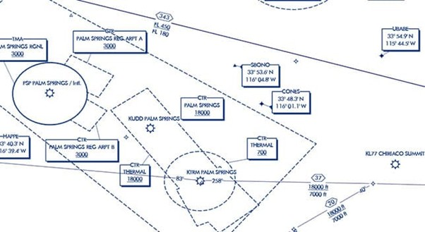
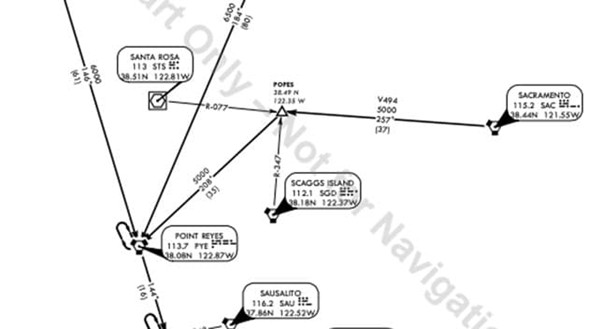
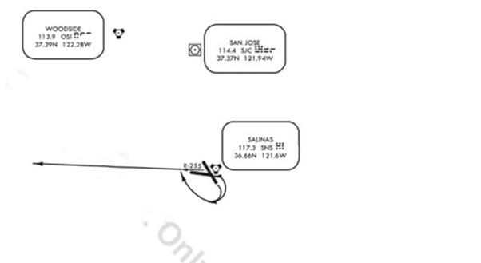
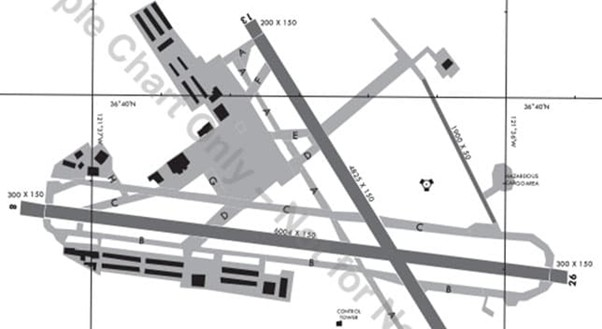
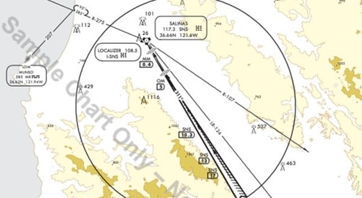
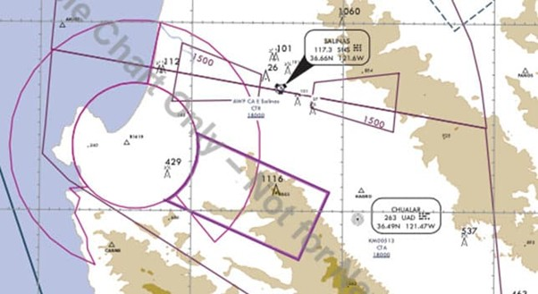
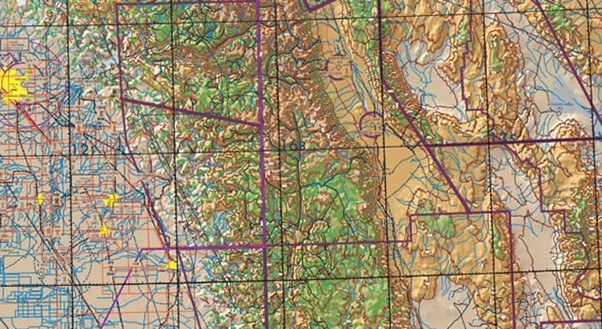
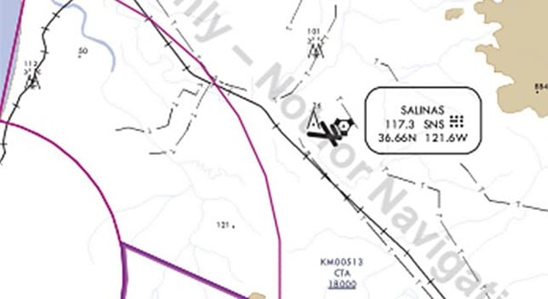

Contrôle de Version¶
Titre
|
Implémentation d’ArcGIS pour la Gestion des Cartes Aéronautiques et la Prévision du Trafic Aérien |
Copie Numéro
|
01 |
Version
|
1.0 |
Date
|
28/03/2025 |
Rédacteurs
|
|
Liste de Distribution¶
Copie Numéro |
Format |
Destinataire du Document |
|---|---|---|
00 |
Electronique |
Chef projet |
01 |
Electronique |
DALAT (Client - Utilisateurs) |
02 |
Electronique |
Équipe de développement (Pour information) |
Introduction et contexte¶
La société DALAT, fournisseur de services à la navigation aérienne, envisage d’implémenter une application de gestion des cartes aéronautiques pour l’espace aérien et les aéroports du Togo. Cette initiative vise à se conformer aux normes internationales de navigation aérienne tout en améliorant l’efficacité opérationnelle. L’application sera conçue pour optimiser le trafic aérien en fournissant des prévisions de trafic en temps réel et en proposant des routes alternatives, contribuant ainsi à réduire les émissions de CO2.
Ce document technique, destinée au client (utilisateurs), détaille ainsi l’ensemble des fonctionnalités de la plateforme ArcGIS adaptées aux besoins spécifiques de DALAT, ainsi que les fonctionnalités complémentaires à développer pour atteindre les objectifs du projet. Il est conçu comme un guide essentiel destiné aux parties prenantes, visant à aligner toutes les équipes autour des objectifs stratégiques du projet.
En définissant clairement la portée, les objectifs, les contraintes et les bénéfices attendus de ce projet, ce document assure une collaboration harmonieuse et un alignement stratégique entre toutes les parties prenantes, essentiels à la réussite de cette solution technologique innovante pour DALAT.
Pourquoi ce projet ? (Objectif du projet)¶
L’objectif principal du projet est de fournir une plateforme permettant à DALAT de :
Concevoir et gérer des cartes aéronautiques conformes aux normes internationales.
Stocker et gérer les données aéronautiques dans une base de données conforme au modèle AIXM.
Faciliter l’échange de données avec les radars de surveillance de l’ATM.
Optimiser les trajectoires de vol en tenant compte des conditions aériennes et du trafic en temps réel.
Réduire l’empreinte carbone en proposant des itinéraires alternatifs pour minimiser la consommation de carburant.
Fonctionnalités de l’application¶
Fonctionnalités à Développer en Complément¶
Les fonctionnalités suivantes seront développées pour répondent aux défis spécifiques de l’optimisation du trafic aérien, tout en assurant l’interopérabilité avec les radars de surveillance de l’ATM.
Prévision en Temps Réel du Trafic Aérien
Module de Suivi en Temps Réel : Développement d’un module intégrant les données des radars ATM pour fournir une vision en temps réel du trafic aérien au-dessus du territoire togolais.
Intégration avec les Radars ATM : Échange bidirectionnel de données entre la base de données ArcGIS et les systèmes de radars de surveillance, permettant une mise à jour continue des informations de trafic.
Proposition de Routes Alternatives
Algorithme d’Optimisation des Trajectoires : Développement d’un algorithme basé sur l’intelligence artificielle pour analyser et optimiser les trajectoires de vol en fonction des conditions en temps réel.
Recommandation Automatique d’Itinéraires : Capacité à recommander automatiquement des itinéraires alternatifs lors de situations de congestion ou de perturbation aérienne, en tenant compte des données actualisées des radars ATM.
Optimisation Environnementale des Trajectoires
Analyse de la Consommation de Carburant : Évaluation des trajectoires en fonction de la consommation de carburant des aéronefs, intégrant des données spécifiques aux modèles d’avions et aux conditions de vol.
Suggestion de Routes Éco-Responsables : Développement de fonctionnalités permettant de proposer des routes optimisées pour réduire l’empreinte carbone du trafic aérien, tout en tenant compte des informations environnementales issues des radars ATM.
En intégrant ces fonctionnalités, DALAT pourra non seulement répondre aux normes internationales de navigation aérienne avec précision, mais aussi améliorer de manière significative la gestion opérationnelle et environnementale de son réseau de trafic aérien grâce à une collaboration efficace entre la base de données ArcGIS et les systèmes ATM.
Méthodologie : Approche Agile¶
L’implémentation de l’application ArcGIS et le développement des fonctionnalités complémentaires du projet suivront une approche Agile, permettant une adaptation continue aux besoins de DALAT et une collaboration étroite avec les utilisateurs finaux.
Planification et Itérations
Sprints de Développement : Le projet sera découpé en sprints de 2 à 4 semaines, assurant des livraisons incrémentales et régulières de fonctionnalités.
Priorités Définies : En début de chaque sprint, les priorités fonctionnelles seront définies en collaboration avec les parties prenantes, assurant un alignement constant sur les objectifs du projet.
Collaboration et Feedback Réguliers
Réunions de Suivi : Des réunions régulières seront organisées pour suivre l’avancement du projet et pour démontrer les fonctionnalités développées à ce stade.
Feedback Intégré : Les retours des utilisateurs finaux seront intégrés tout au long du processus de développement, permettant des ajustements rapides et pertinents.
Tests et Validation
Validation Continue : Chaque module développé sera validé de manière indépendante avant son intégration dans le système global.
Tests Complets : Des tests unitaires, fonctionnels et de performance seront effectués pour assurer la robustesse, la fiabilité et la performance du système déployé.
Support et Maintenance¶
L’application comprendra une section d’aide intégrée fournissant des guides et des tutoriels pour l’utilisation des fonctionnalités principales en plus du manuel d’utilisateur qui sera livré post-projet. Une formation des utilisateurs est également prévue.
Par ailleurs, des mises à jour régulières de l’application seront effectuées pour intégrer de nouvelles fonctionnalités, améliorer la sécurité et répondre aux évolutions des normes de l’aviation et des technologies SIG.
Conclusion¶
Cette documentation technique présente une vision claire du projet d’intégration d’ArcGIS pour DALAT, en mettant en avant les fonctionnalités existantes et les développements complémentaires nécessaires. Grâce à l’approche Agile, la mise en œuvre sera progressive et optimisée afin d’assurer une solution pleinement adaptée aux besoins opérationnels de DALAT.
L’application permettra ainsi une meilleure gestion des cartes aéronautiques, une prévision efficace du trafic aérien et une optimisation des trajets des aéronefs pour une aviation plus performante et respectueuse de l’environnement.
FAQ (Foire Aux Questions)¶
Q1 : Quelles sont les spécifications techniques minimales requises pour exécuter l’application ArcGIS de DALAT ?
Pour une performance optimale et une meilleure expérience utilisateur,
nous recommandons pour la conception des cartes aéronautiques
l’utilisation d’un ordinateur avec au moins 4 G.0 de RAM.
Q2 : Comment puis-je obtenir de l’aide en cas de problème technique avec l’application ?
Vous pouvez contacter notre support technique en soumettant un ticket
via notre plateforme en ligne. Vous recevrez une réponse en moyenne
entre une (01) heure ou deux (02).
Q3 : Comment sont gérées les mises à jour de l’application ArcGIS ?
Nous assurons des mises à jour régulières de l'application pour intégrer
de nouvelles fonctionnalités et corriger les bugs. Les mises à jour sont
déployées de manière transparente pour minimiser l'impact sur votre
utilisation quotidienne.
Q4 : Est-il possible de personnaliser les modèles de cartes aéronautiques fournis par ArcGIS ?
Oui, les modèles de cartes préconfigurés peuvent être personnalisés pour
répondre aux besoins spécifiques de DALAT en matière de symbologie et
d'annotations.
Q5 : Quelles sont les normes internationales prises en charge par l’application pour la gestion des données aéronautiques ?
L'application est conforme aux normes de l'aviation définies par les
autorités internationales, notamment le modèle AIXM pour l'échange
de données avec les systèmes ATM.
Q6 : Comment fonctionne l’optimisation environnementale des trajectoires proposée par l’application ?
L'application analyse les trajectoires en fonction de la consommation
de carburant et des émissions de CO2, suggérant des routes éco-responsables
pour minimiser l'impact environnemental du trafic aérien.
Annexe¶
Définition et glossaire¶
Carte aéronautique Représentation d’une partie de la terre, de sa planimétrie et de son relief, conçue spécialement pour répondre aux besoins de la navigation aérienne.
Radar ATM Les radars de contrôle aérien sont des radars utilisés par le contrôle aérien pour repérer, suivre et guider les aéronefs dans l’espace de vol en route ou autour d’un aérodrome.
Code et abréviation¶
AIXM : Modèle d’échange d’information aéronautique (Aeronautical Information Exchange Model)
ANSP : Fournisseur de service à la navigation aérienne (Air Navigation Service Provider)
ArcGIS : Logiciel géospatial permettant d’éditer, de gérer et d’analyser des données géographiques.
ATM : Gestion du trafic aérien (Air Traffic Management)
DALAT : DJEKOU AGBA LEGUEZIM AKAKPO TEKO
OACI : Organisation de l’Aviation Civile Internationale
SIG : Système d’information géographique
Exemples de cartes aéronautiques préconfigurées dans ArcGIS¶
Cette section présente des modèles standards de cartes fournis par ArcGIS. Ces cartes servent de référence pour la conception, la navigation, le contrôle, et la sécurité dans l’espace aérien.
Cartes en route
Les cartes en route fournissent au personnel de vol les informations dont il a besoin pour la navigation IFR dans le réseau aérien mondial.
{kind=link}
Cartes STAR (Standard Terminal Arrival)
Les cartes STAR fournissent au personnel de vol des informations visant à simplifier sa transition de la structure en route aux procédures d’approche d’un aéroport.
{kind=link}
Cartes SID (Standard Instrument Departure)
Les cartes SID fournissent au personnel de vol des informations visant à simplifier son départ d’un aéroport.
{kind=link}
Cartes d’aérodrome
Les cartes d’aérodrome représentent la configuration de l’espace aérien et d’autres informations afin de fluidifier le trafic au sol à l’aéroport.
{kind=link}
Cartes d’approche instrumentale
Les cartes d’approche instrumentale aident le personnel de vol à atterrir sur la piste prévue et fournissent des informations utiles en cas d’échec de l’approche.
{kind=link}
Cartes d’altitude minimale radar
Les cartes d’altitude minimale radar sont des cartes supplémentaires qui aident le personnel de vol à surveiller et vérifier l’altitude sous contrôle radar.
{kind=link}
Cartes VFR
Les cartes VFR sont conçues pour faciliter la navigation visuelle des avions à faible ou moyenne vitesse, et sont adaptées aux opérations court ou moyen courrier.
{kind=link}
Cartes d’approche visuelle
Les cartes d’approche visuelle aident le personnel de vol à atterrir sur la piste prévue grâce à des références de navigation visuelles.
{kind=link}
Comment les fonctionnalités d’ArcGIS Répondent-elles aux Besoins de DALAT ?¶
ArcGIS Aviation Charting assure une gestion efficace des données d’aviation grâce à des processus intégrés qui génèrent des cartes de haute qualité conformes aux normes de l’aviation définies par les autorités. Voici comment ArcGIS répond aux besoins spécifiques de DALAT :
Gestion et Visualisation des Cartes Aéronautiques
Création Automatisée de Cartes : Utilisation de modèles préconfigurés conformes à l’annexe 4 de l’OACI pour générer rapidement des cartes aéronautiques détaillées.
Personnalisation des Modèles : Modification des fichiers de configuration fournis pour adapter les modèles de cartes aux exigences spécifiques de DALAT, assurant ainsi la conformité et la flexibilité.
Outils Spécialisés pour la Création de Cartes : Utilisation d’outils dédiés pour créer des éléments spécifiques à l’aviation tels que des altitudes de croisière, des tables de minima et des flèches d’orientation, garantissant ainsi le respect des normes de l’aviation et la précision des informations cartographiques.
Intégration des Données de Navigation : Inclusion des informations cruciales comme les couloirs aériens, les zones de restriction et les points de report pour une planification de vol précise.
Superposition des Données Météorologiques : Intégration des prévisions météorologiques pour une planification optimale des vols.
Règles Métier Configurables : Automatisation de la création de cartes en fonction des règles métier spécifiques de DALAT, assurant une cohérence et une conformité continues avec les exigences opérationnelles.
Stockage et Gestion des Données Géospatiales
Base de Données AIXM : Mise en place d’une base de données hautement normalisée selon le modèle AIXM, optimisée pour l’échange de données avec les radars de surveillance de l’ATM.
Sécurité et Gestion des Accès : Contrôle sécurisé des droits d’accès pour la modification et la consultation des données, assurant l’intégrité et la confidentialité des informations aéronautiques.
Rapports de Modification des Cartes : Génération de rapports détaillés pour suivre les modifications apportées aux cartes aéronautiques, facilitant ainsi la gestion du cycle de production et assurant la conformité continue aux normes de l’aviation.
Ces fonctionnalités d’ArcGIS sont spécifiquement adaptées pour répondre aux besoins critiques de DALAT en matière de gestion des cartes aéronautiques et d’optimisation du trafic aérien, contribuant ainsi à l’amélioration globale de la sécurité et de l’efficacité des opérations aériennes.
Quelques exemples de cartes créables avec ArcGIS est présenté en annexe.